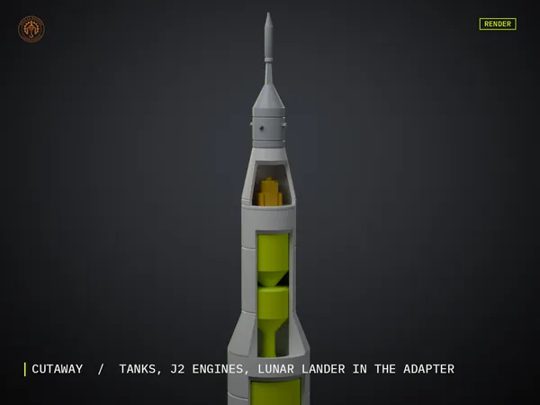
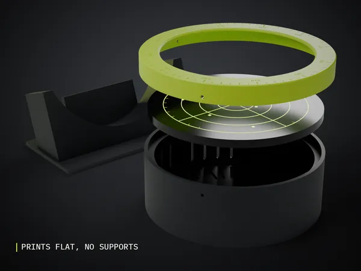
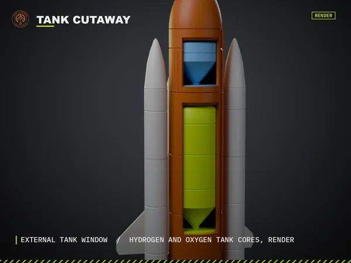
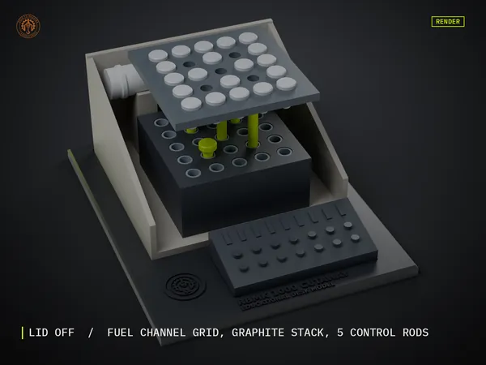
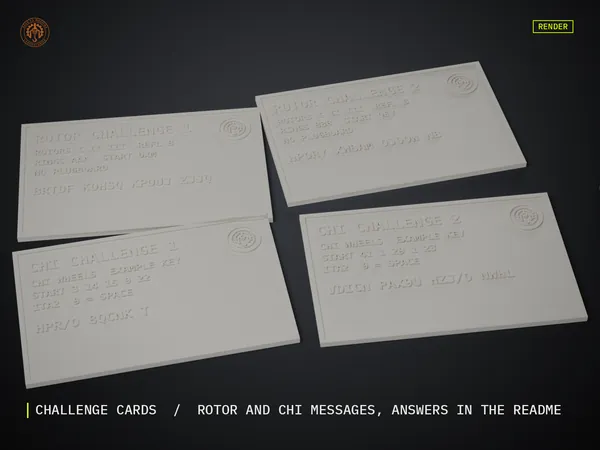

LIVESPACE

Moon Rocket Cutaway
My Saturn V style rocket stands about 300 mm tall. The stages lift apart and a window down the front shows the fuel tanks, the engines and the little lunar lander tucked inside.
See it on Cults3DWORKBENCH
31 MODELS / LINKS OPEN CULTS3D
Printable models I've designed, from rockets you can see inside to gear for the radio bench. Every picture is a render. The files are on Cults3D.

My Saturn V style rocket stands about 300 mm tall. The stages lift apart and a window down the front shows the fuel tanks, the engines and the little lunar lander tucked inside.
See it on Cults3D
My first sale. It turns a round Raspberry Pi screen into an old radar scope for live aircraft tracking, and fits the Waveshare 5 inch and 4 inch rounds.
See it on Cults3D
The orbiter, the big tank and both boosters on one stand. I cut a window in the tank so you can see the two propellant tanks, and the payload bay opens.
See it on Cults3D
My cutaway of an RBMK core. Lift the lid to see the fuel channel grid, the graphite stack and the control rods. It goes with my reactor game.
See it on Cults3D
Three of my cipher models together on one display plinth: the field cipher machine, the rotor demonstrator and the Lorenz wheel.
See it on Cults3DCOLLECTION
4 MORE
A polished Sputnik style sphere with its four swept antennas, held nose up on a round stand. I added a cutaway half if you want to see inside.
See it on Cults3DMy Voyager style probe, with the big dish, the golden record and the scan platform out on its boom.
See it on Cults3DAn Apollo era lander with the ascent stage sitting on the gold descent stage, ladder and all.
See it on Cults3DThe moon buggy to park next to my lander, with the seats, the antennas and the big wheels.
See it on Cults3DCOLLECTION
7 MORE
A Cold War style radar site with the big dish and the height finder. There is an option to make the dish turn with a small motor.
See it on Cults3DThe hub I use to build a quick aircraft band ground plane antenna on an SO239 or N socket. Free to print.
See it on Cults3DA small clip that takes the strain off the coax at the top of my receiver mast. Sizes for 20, 25 and 32 mm poles.
See it on Cults3DI got tired of my SDR dongle dangling off the Pi, so I made a desk cradle and mounts that hold it all tidy with strain relief on the SMA.
See it on Cults3DTethered caps for the SMA ports on my dongles and LNAs, with a fit test strip so you get them snug first time. Free.
See it on Cults3DA tidy box for an end fed half wave unun or a choke, sized for FT240 and FT140 cores.
See it on Cults3DDrill guides I use for clean SO239, N and BNC holes in project boxes. Free.
See it on Cults3DCOLLECTION
3 MORE
An Enigma style desk model in its wooden box, with the keyboard, the lampboard and the rotor thumbwheels.
See it on Cults3DA teaching model with three turning rotors so you can trace a letter by hand and see how a rotor machine scrambles it. Free.
See it on Cults3DA simplified SZ42 chi wheel I made to show how Lorenz adds key to the tape. It pairs with my Lorenz game. Free.
See it on Cults3DCOLLECTION
3 MORE
Tilt stands, feet and a desk clamp for the WinCTRL MCDU and FCU, so my sim panels sit at the right angle.
See it on Cults3DThin templates to check the cut outs before you drill a sim panel. Free.
See it on Cults3DA slide in kneeboard for the iPad mini 6 and the A17 Pro, for charts and checklists on my knee.
See it on Cults3DCOLLECTION
1 MORE
A desk robot arm with a fork gripper, built around MG996R and SG90 servos.
See it on Cults3DCOLLECTION
2 MORE
The oldest board game I know of, with the board, the pieces and proper four sided dice.
See it on Cults3DA slide in grip that makes the Playdate nicer to hold for long sessions and keeps the crank side clear.
See it on Cults3DCOLLECTION
6 MORE
A friendly little Halloween ghost in a few parts, so you get the colours without a multi colour printer.
See it on Cults3DChristmas tree ornaments in separate colour parts that fit together. No multi colour printer needed.
See it on Cults3DOne shank with a left hand and a right hand thread on it, and two nuts that run in opposite directions. A great fidget.
See it on Cults3DGears that turn in circles yet move a point in a straight line. I could watch it all day.
See it on Cults3DA snap in cage that clips on your waistband and holds one or two balls. Free.
See it on Cults3DA hook that clips onto stable grille bars to hang a bridle or halter, with no screws.
See it on Cults3D